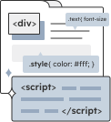

我是 Eira 曾宇彤
有 2 年以上 UI/UX 相關經驗，曾於數位軟體公司擔任網頁設計師。
相信多元的興趣及持續的學習是尋找到設計解決方案的最佳解，不只是 UI/UX 設計、視覺設計，還擁有網頁前端語言撰寫能力、以及使用者訪談經驗。
前者使得我擅長將設計改念轉化為可操作的成果，將切版概念融入設計之中，強化工程與設計端的結合；後者則協助我以使用者導向的方式思考，強化設計的邏輯依據。
能力

UI/UX 設計
以使用者為中心進行設計
同時探索商業利益與技術的平衡點

視覺設計
掌握企業/產品調性
確保視覺元素的美觀及一致性

前端語言
擁有前端語言撰寫技能
可有效減少溝通成本並提升設計的可執行性。
工具軟體
Figma

Illustrator

Photoshop

After Effects

VS Code
Notion
相關經歷
工作職務 : 網頁設計師
鎧應科技 2021.02 - 2023.06
2021.02 - 2023.06
負責公司官網 UI/UX 設計、前端語言撰寫及檔案管理，以及其他行銷素材設計。
負責項目主要包含:
- 官網大型設計改良 : 重新規劃官網資訊架構，制定設計系統及設計元件。
- 4 個網頁設計改良 : 提升使用者體驗及產品功能呈現。
- 9 個全新產品頁面設計 : 強化產品功能特色及行銷重點。
UX 研究方法實戰班
嫁給 RD 的 UI Designer 2023.07
透過實例講解與分組課堂練習，建立設計思維以及訓練邏輯推理，養成發現問題並解決問題的能力，並於課堂中實際產出工作上會用到的設計文件。
學習項目主要包含:
- 使用者測試 Usability Test
- 使用者訪談 User Interview
- 親和圖 Affinity Diagram
- 人物誌 Persona
- 使用者旅程圖 User Journey